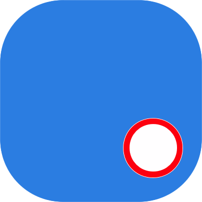

<!-- We don't need full layout in this file because this page will be parsed with Ajax. It is just enough to put here .navbar and .page-->
 
<!-- Top Navbar-->
<div class="navbar">
  <div class="navbar-inner">
    <div class="left">
      <a href="#" class="back link"> 
        <i class="icon icon-back"></i>
        <span>Back</span>
       </a>
    </div>
    <div class="center sliding">{{url_query.item}}</div>
    <div class="right">
      <a href="settingDevice.html?name={{url_query.item}}&id={{url_query.id}}&safetymode={{url_query.safetymode}}&battery={{url_query.battery}}"><i class="fa fa-cog" aria-hidden="true"></i></a>
      <a href="#" class="link icon-only open-panel"><i class="icon icon-bars"></i></a>
    </div>
  </div>    
</div> 

<div class="page" data-page="mapPageNotConnected">
	<div class="page-content">
	      <div id="img_pick_disconnected">
	          
	      </div>
         <div id="mapDivAbout">
		
		</div>
	</div>
</div>
 
